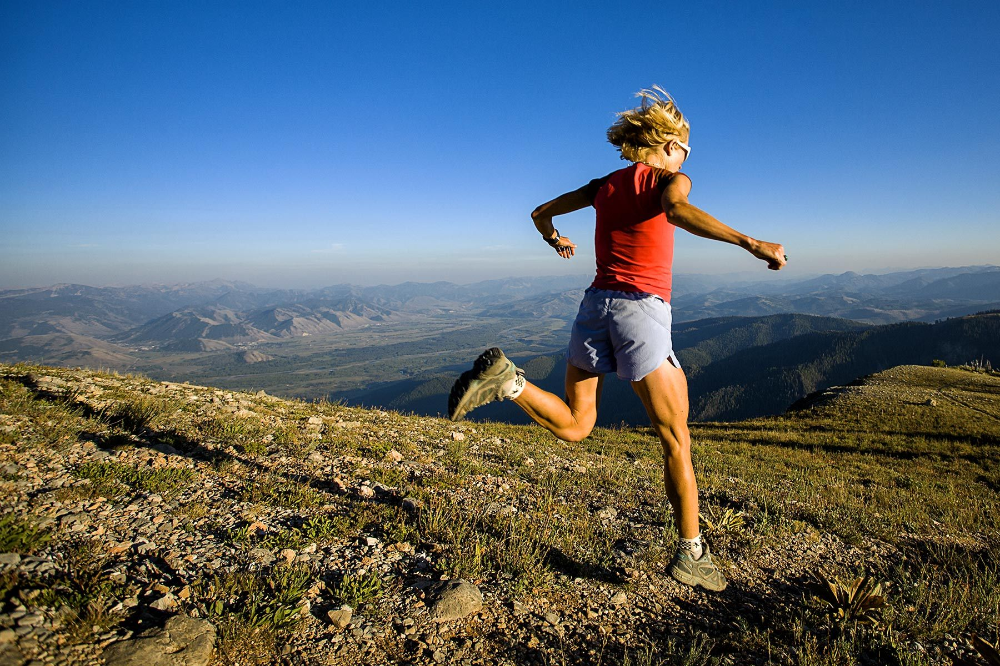
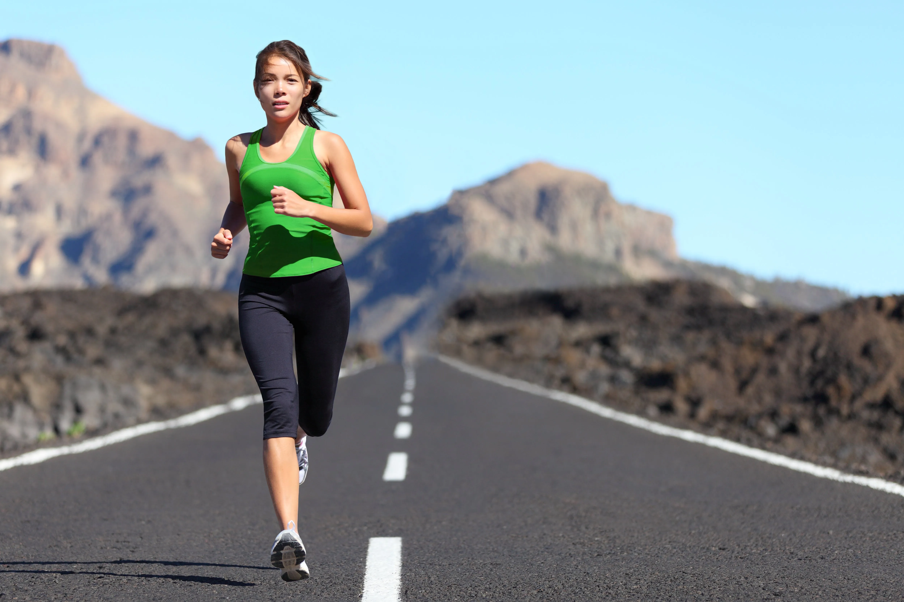

Running Distances
-
1km: Fun Run
This short and sweet 1km run is perfect for beginners or those who just want to have a bit of fun. Whether you're looking to kickstart your fitness journey or simply enjoy a leisurely jog in the great outdoors, this distance is a great way to get started.
-
5km Run

With a distance of 5km, this run is a great challenge for beginner runners or those who want to improve their fitness. Whether you're looking to increase your speed or endurance, this distance will test your limits and help you reach your goals.
-
10km Run
The 10km run is a great intermediate distance that offers a challenge to runners who have already tackled shorter races. With a mix of speed and endurance, this distance requires a bit more training and dedication, but the sense of accomplishment you'll feel at the finish line will be well worth it.
-
Half Marathon
The half marathon is a major milestone for runners and requires dedicated training to complete. At a distance of 21km, this run will push you to your limits both physically and mentally, but the feeling of crossing the finish line is an experience like no other.
-
Full Marathon
The full marathon is the ultimate challenge for runners and requires months of intense training to complete. With a distance of 42km, this run is not for the faint of heart, but for those who are willing to put in the time and effort, the feeling of crossing the finish line is a truly unforgettable experience.